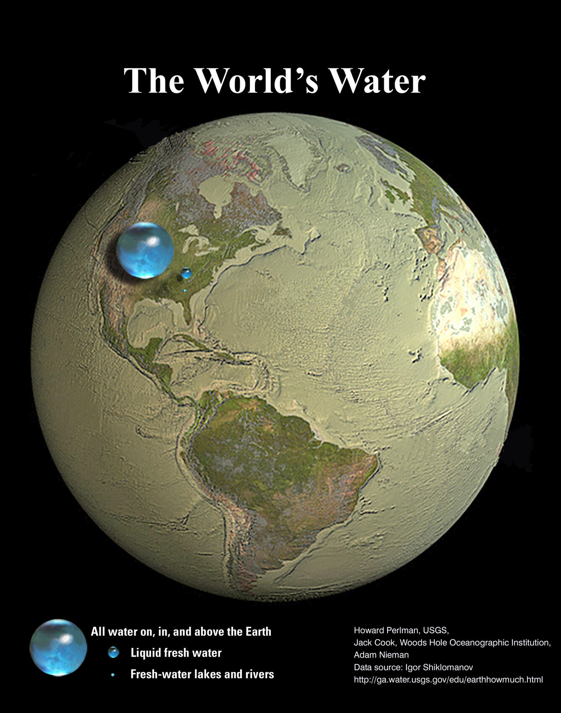
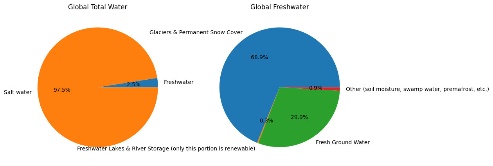
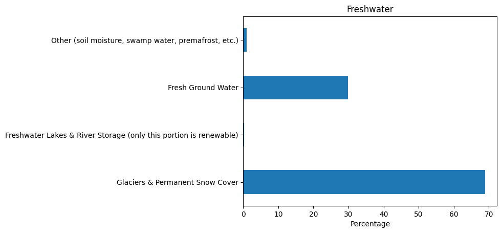
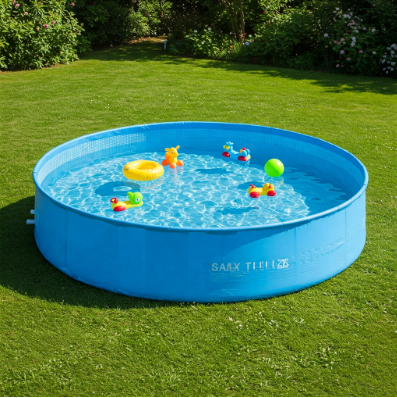
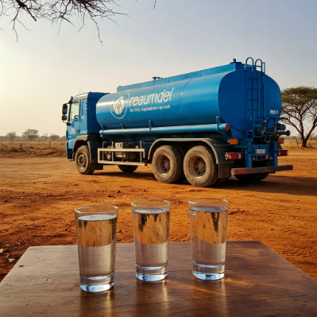
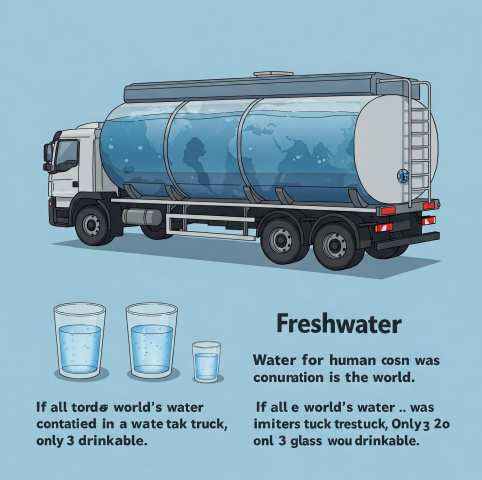
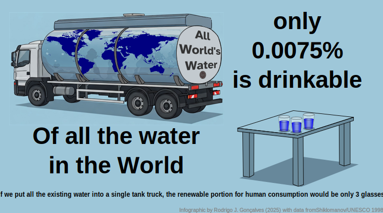

I love this drawing that shows how it would look if all the world’s water were contained in a single ‘drop’.

A few months after seeing this for the first time, I had to give a lecture about water-related subjects and I thought I could use it as an introductory picture to convey the message that water is not infinite as we sometimes seem to assume.
Getting into something more quantitative, I also love this infographic from the US Geological Service which shows that the water available for human use is actually a tiny percentage of that big ‘water sphere’ in the picture above.

That infographic is great, and I have used it a few times before in my presentations and lectures. I also felt like creating a simplified version which can also be effective in communicating the message.
At first, I thought ‘This is probably one of the few cases where a pie chart would not ruin the message’ (and I found out later that a related report by UNESCO1 in deed partially uses pie charts). But I still felt something else could be done about that. I thought I’d try my own infographic using those numbers. First I started writing down the percentages, only to notice that the numbers don’t add up to 100% (i.e. the first bar sums 99.90 %). Yep, that is why the figure caption in the source appropriately warns you ‘(numbers are rounded)’ and ‘Percentages may not sum to 100 percent due to rounding.’ in this version. Nice, let’s continue.
I started with the elemental premises:
- It’s about water
- We drink water, we need it, we like it
- The message* is “There’s plenty of water, but our drinking water is scarce”
(*) my message anyway, for the intended audience of my lecture
So I thought why not use drinking glasses and swimming pools? I know, not very original. The interesting part is that I want the ‘final’ number (i.e. water for human consumption) to be a glass. So I will find the data, and then adjust it using the percentages to make the analogy aiming to the metaphor ‘a glass of water is all we have’. Let’s see if I can do something fun.
Let’s find the source data. Fortunately, the USGS very professionally gives the appropriate credit: ‘Data source: Igor Shiklomanov’s chapter “World fresh water resources” in Peter H. Gleick (editor), 1993, Water in Crisis: A Guide to the World’s Fresh Water Resources.’
Great! I found it rather quickly on the internet and started looking at tables in a scanned copy of the original chapter. The original report shows all numbers in a table (Table 2.1) which is a bit more complex than the infographic (as it should be) so my first move is to try to get the same numbers as the infographic, to check that everything matches as expected. (After a bit more searching, I found that the table is partially digitalized on the USGS website.
When searching for the chapter of the 1993 book, I found another PDF, which is apparently based on the original report, but this one appeared a few years later (1998) and it’s by published by UNESCO. It’s a bit different in the categories used, but equally interesting:
- Shiklomanov 1998. World water resources : a new appraisal and assessment for the 21st century : a summary of the monograph world water resources. (read the PDF copy at UNESCO’s website)
From the communication point of view, I think I like the 1998 report better. It is simpler and stresses which portion of the water is renewable. The main point for my case is that, as mentioned in the original report, fresh water from lakes and rivers is the main source of human water consumption (and it’s about 0.26% of the total Earth’s freshwater).
So I decided I will use that criteria, and use the 1998 source for my infographic. This is the data I will use, from the 1998 report2.
| Level | Compartment | % |
|---|---|---|
| Global water | Freshwater | 2.50 |
| Global water | Salt water | 97.50 |
| Total global water | 100 |
| Level | Compartment | % |
|---|---|---|
| Freshwater | Glaciers & Permanent Snow Cover | 68.90 |
| Freshwater | Freshwater Lakes & River Storage (only this portion is renewable) |
0.30 |
| Freshwater | Fresh Ground Water | 29.90 |
| Freshwater | Other (soil moisture, swamp water, permafrost, etc.) |
0.90 |
| Total Freshwater | 100 |
Now let’s begin with something quick and dirty, just to get it out of the way: how would it look like with a chart pie? Like this:

Check this simple notebook here
Ok it doesn’t look good: some of the portions of the Global Freshwater plot (the one we care about) are too small. Once again, pie chart is probably not the best option. Just for fun, let’s turn it into the good and old bar plot.

Ok, but nothing too exciting. Let’s go on.
Let’s say all the human-consumable water is now equal to a glass of water (250 ml). By scaling all the other data accordingly, we get that the world’s total water (saltwater + freshwater) would equal 3333.33 liters. Now I have to think about some well-known object that can be associated with that amount. What can I use? My initial thought (an Olympic swimming pool of 2.5 M liters) won’t do it (it would be a very small number) so I need something else. Either something relatable to around 3k L or maybe 3 objects of around 1000 L.
The aim is to create the idea that ’If all world’s water were [a well-known object], then the freshwater available for human use would be just a single glass of water.”
What to use as ‘the well-known object’? Some ideas:
- If we use a 1000-L water tank (household use), then the World’s total water corresponds to 3.3 water tanks.
- A standard oil barrel (159 L)? The World’s total water corresponds to ~21 barrels.
- A water truck? Probably too big (it carries 10k L).
- What about a plastic swimming pool?
This last option seemed reasonable: there are plenty of available sizes in the market that could serve this purpose. Imagine a circular swimming pool, the one you assemble for the family in the backyard during summer. Now you fill it so the water column is 1 meter in height. If the circular swimming pool is 2.06 m in diameter, then the volume of water is 3332.92 L, which is enough approximation for my purpose.
Therefore it seems I found my ‘well-known object’ metaphor: a circular, family swimming pool with a diameter of 2 meters.

However, the message ‘From this swimming pool, only one glass is drinkable’ may be misleading: Someone might think ‘But you can drink more water from the swimming pool if you’re thirsty.’ The answer is NO, because the swimming pool represents ALL water, including oceans (which make up most of the volume). So, this is a potential communication pitfall of my idea.
How can I convey the message that only a small portion of the total water is usable? Kind of ‘back to start’.. I need to show the total water as a mix of salt and fresh water.
What about equating the total global water to a water truck? If the total world’s water were contained in a truck tank (10k L) then the drinkable water would be 0.75 L. Ok, sounds good. That amount of liquid is a typical bottle of wine. Not sure if I want to use wine to depict drinkable water though. But, hey! 750 ml is exactly 3 glasses (250 ml)!! So there you go, ‘1 water tank truck vs 3 glasses of water’ seems like good infographic material (a well-known object in a manageable number) for appealing to a broad audience.
Now let’s try it. Let’s use AI to explore a little this idea: ‘Create an image that shows a water tank truck and 3 glasses of water.’

Not too bad, but not quite there yet. I tired a few more versions but it didn’t improve much more than this.
If it’s an infographic, then a picture-like image won’t do it. Maybe I need to show some numbers and text, right? I’ll include this in the prompt: “Create an infographic that conveys this message:”Water for human consumption is scarce in the world. If all the world’s water was contained in a water tank truck, only 3 glasses would be drinkable.” with an image that shows a water tank truck and 3 glasses of water.”
This is what I got:

Aside from the size difference between glasses, it’s not bad! In deed, notice the world map painted on the tank wall .. that’s a great idea!!
So my final decision is this: Using the above image as the starting point, I will use vector drawings (much love to my dear InkScape) and include some descriptive text and numbers.
Let’s go!
First, I need a world map to cover the water tank. I’ll get this one from FreeSVG:
After working for some time and trying different text and placements of objects, I got to a verstion that I’m happy with.
This is my final product:

Final image, original SVG format.

Final image, exported in PNG format.
And that is how this infographic was created, with data/help from the USGS, UNESCO, Wikipedia and Google Gemini.
What do you think?
Footnotes
Shiklomanov, Igor A. 1998. World water resources: a new appraisal and assessment for the 21st century. Link to source↩︎
Shiklomanov 1998. World water resources : a new appraisal and assessment for the 21st century : a summary of the monograph world water resources. (read the PDF copy at UNESCO’s website)↩︎